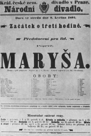
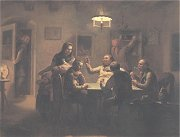
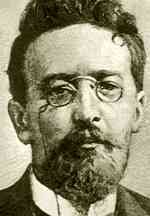
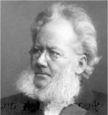
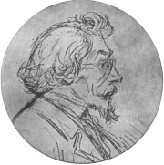
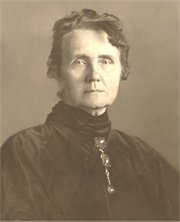
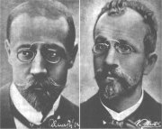
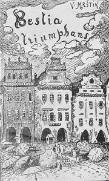
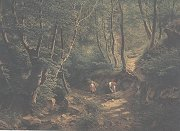
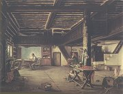

|
REALISTICKÉ DRAMA
Autoři realistických divadelních her se soustředili na mezilidské vztahy. Zaměřují se na konfliktní situace a nedorozumění v komunikaci. Důležitá pro ně byla psychologie postav. Stejně jako realističtí prozaikové si všímají negativních společenských jevů a jejich dopadu na jedince. Děj divadelních her je uvěřitelný, prostředí konkrétní, náměty současné a postavy reprezentují běžné typy. Někdy používají nespisovná slova nebo mluví nářečím, které je pro danou oblast typické. Dramata již nejsou veršovaná. Autoři píšou prózou, protože je bližší běžné mluvě. Vedle tragédií vznikají i komedie, především satirické.
Skutečnost napodobovala i režie nebo jevištní výprava – scéna, kulisy, rekvizity a kostýmy se měly co nejvíce přiblížit realitě. Herci jedli na jevišti skutečné pokrmy, studovali chování obyčejných lidí v konkrétních situacích a napodobovali ho.
|

Antonín Gareis mladší: Hráči karet
|
Nikolaj Vasiljevič Gogol
(1809-1852)
Ruský spisovatel Gogol psal povídky z ukrajinského prostředí, odkud pocházel jeho otec (spisovatel a historik) a kde prožil své dětství. Gogol založil tradici vylíčení Petrohradu jako přízračného města. Napsal satirické komedie Revizor, Ženitba a Hráči. Je autorem povídky Plášť nebo povídkových sbírek Mirhorod (Taras Bulba) a Petrohradské povídky (Bláznovy zápisky), ve kterých líčí Petrohrad jako přízračné město. Román Čičikovova dobrodružství aneb Mrtvé duše bohužel nedokončil.
|
Nikolaj Vasiljevič Gogol: Revizor
Hlavním hrdinou satirické komedie Revizor je podvodník Chlestakov, který přijíždí do zapadlého maloměsta. Jeho obyvatelé se dozvědí, že má město tajně navštívit vysoký úředník z Petrohradu, a Chlestakova si s revizorem spletou. Gogol mistrně vyjadřuje špatné svědomí jednotlivých úředníků, kteří se snaží zakrýt vlastní podvody nebo získat různé výhody. Významní představitelé města se před Chlestakovem ponižují a snaží se ho podplatit. Ten využívá všech výhod, bezostyšně se dvoří manželce hejtmana, u kterého je ubytován, a před odjezdem se zasnoubí s jeho dcerou. Když všichni zjistí z Chlestakovova dopisu, že šlo o podvodníka, přijíždí nový revizor...
|

Jak dosahuje Gogol komického účinku?
Charakterizuj Chlestakova.
Gogolovu satiru uvádí motto „Nevrč, brachu, na zrcadlo, když máš křivou hubu.“. Co je motto?
Najdi literární díla, která jejich autoři uvedli vlastním nebo cizím mottem. Co chtěli mottem vyjádřit?
|
Anton Pavlovič Čechov
(1860-1904)
Ruský dramatik Čechov původně vystudoval lékařskou fakultu. Psal humoristické a satirické prózy – Pestré povídky, jednoaktovky – Medvěd, psychologické povídky – Chameleon, Souboj, Pavilón č. 6, Dáma s psíčkem nebo Černý mnich a divadelní hry – Racek, Strýček Váňa, Tři sestry, Višňový sad.
Co je jednoaktovka?
Čechovovy hry inscenoval v divadle MCH(A)T jeho zakladatel Stanislavskij. Co o tomto režisérovi víš?
|
Anton Pavlovič Čechov: Višňový sad
Tragikomedie Višňový sad popisuje osudy obyvatel venkovského sídla, kteří se těžce vypořádávají se společenskými změnami. Ljubov Andrejevna Raněvská s dcerou Aňou se vracejí z pařížského pobytu do Ruska, protože jim došly peníze. Rodinné panství, o které se stará její nevlastní dcera Varja, je na pokraji krachu. Jedinou možností je prodat pozemky včetně višňového sadu. Ten je ale pro sentimentální Raněvskou nedotknutelným symbolem dětství. Při dražbě koupí celé panství zbohatlík Lopachin, bývalý poddaný, který se uchází o Varju. Ta ho ale odmítne. Nakonec se Raněvská vrací do Paříže společně s Aňou a věčným studentem Péťou Trofimovem. Nemocného sluhu Firse čeká smrt v opuštěném domě, protože na něj všichni zapomněli...
|

Jak na tebe působí dialogy v ukázce?
Co si myslíš o jednotlivých postavách?
Najdi v Čechovově hře tragické i komické prvky.
|
Henrik Ibsen (1828-1906)
Norský dramatik Henrik Ibsen strávil 30 let v Itálii a Německu. Pracoval jako režisér a zároveň psal divadelní hry. Nejprve romantické, později historické a realistické. K nejznámějším patří Domov loutek (Nora) nebo pohádkové drama Peer Gynt a dále divadelní hry Spolek mladých, Opory společnosti, Strašidla, Nepřítel lidu, Divoká kachna nebo Když z mrtvých procitáme.
Kritikové nařkli Ibsena, že rozbíjí rodiny a popírá základní hodnoty, a snažili se jeho hry zakázat. Pro Ibsenovy zastánce se naopak staly symbolem boje za ženskou emancipaci. Sám autor ale tyto zjednodušené interpretace odmítal. Co si o jeho hrách myslíš ty?
Může umělecké dílo někoho napravit nebo zkazit? Jak?
|
Henrik Ibsen: Domov loutek (Nora)
Komorní drama Domov loutek je známější pod křestním jménem jeho hlavní postavy. Noru Helmerovou vydírá propuštěný bankovní úředník Krogstadt. Ví, že Nora podepsala jménem mrtvého otce falešnou směnku, a když zjistil, že byl její manžel Torvald jmenován ředitelem banky, chce své místo zpět. Zdánlivě idylické manželské soužití dostává trhliny. Torvald o manželčině podvodu nevěděl a je překvapen její samostatností, protože dosud hrála roli pasivní ženy a bezbranné loutky. Problém se směnkou, kterou Nora tajně splácela, se sice vyřeší, ale ostré střetnutí s manželem řeší Nora odchodem od rodiny. Rozhodla se postavit na vlastní nohy a chce najít sama sebe.
|

Má žena právo opustit své děti? Proč? Za jakých podmínek?
Jak bys řešil/a rodinný konflikt ty?
Co pro tebe znamená rodina?
Kdy chceš založit vlastní rodinu? S kým a proč?
Jak budeš vychovávat své děti?
Kdo je důležitější pro výchovu dětí otec nebo matka?
Co si myslíš o rozvodech?
Měli by rodiče zůstávat spolu jenom kvůli dětem?
|
Ladislav Stroupežnický
(1850-1892)
Stroupežnický se narodil v Cerhonicích u Písku a zemřel v Praze. Pracoval jako dramaturg Národního divadla. Psal realistická dramata – Naši furianti, Václav Hrobčický z Hrobčic a Na valdštejnské šachtě i historické hry – Zvíkovský rarášek a Paní mincmistrová. Jejich hlavní postavou je renesanční básník a bouřlivák Mikuláš Dačický z Heslova. Stroupežnický se věnoval rovněž humoristické a realistické povídkové tvorbě.
Vysvětli význam slova furiant.
Co víš o Dačickém?
Stroupežnický se vyhýbal portrétování, protože si v mládí zohavil obličej (ustřelil si nos) při pokusu o sebevraždu. Zjisti, proč se chtěl zabít.
|
Ladislav Stroupežnický: Naši furianti
Činohra Naši furianti se odehrává roku 1869 v jihočeské vesnici Honice. Ústřední zápletku tvoří spor o místo ponocného mezi vysloužilým vojákem Bláhou a krejčím Fialou, který má 7 dětí. Před jednáním obecního výboru se najde anonymní dopis, jehož pisatel požaduje, aby byl zvolen Bláha, jinak vesnici vypálí. Podezření padne na Bláhu, a tak se ponocným stává Fiala, vzápětí se ovšem ukáže, že psaní nadiktoval své dceři. Místo získává Bláha a rozhádaní vesničané nakonec urovnají všechny malicherné spory. Rodiče přestanou bránit Václavovi a Verunce ve svatbě, švec Habršperk neudá sedláka Buška, že pytlačil, a Fialův dopis je spálen.
Premiéra této první české realistické hry v Národním divadle roku 1887 vzbudila odpor diváků i kritiky. Vadilo jim, že drama nemá kladnou postavu, 2. dějství se odehrává v hospodě, kde herci „realisticky“ mlátí do stolu a plivají na zem, a že Stroupežnický uvedl na jeviště „vesnickou špínu“.
|

Aleš: Ladislav Stroupežnický
Charakterizuj jazyk jednotlivých postav.
Co si myslíš o námětu a zpracování hry?
Jaký je tvůj názor na pisatele anonymních dopisů?
Kde se v současné době můžeme běžně setkat s anonymními názory?
Jaký je rozdíl mezi anonymem, pseudonymem, přezdívkou a nickem?
|
Gabriela Preissová
(1862-1946)
Preissová pocházela z Kutné Hory, zemřela v Praze. Psala prózy z prostředí Slovácka a dramata s výraznými ženskými hrdinkami – Gazdina roba a Její pastorkyňa. Po negativním ohlasu kritiky se Preissová uchýlila k nekonfliktní zábavné tvorbě pro ženy. Svým dramatům dala rovněž románovou podobu.
Leoš Janáček (1854-1928) zhudebnil Její pastorkyni pomocí své originální metody tzv. nápěvků mluvy. Jako libreto použil přímo text hry Gabriely Preissové, nemuselo tudíž vznikat nové veršované libreto, jak je v operách zvykem.
Co je nápěvková mluva?
|
Gabriela Preissová: Její pastorkyňa
Tragédie Její pastorkyňa popisuje hrůzný čin staré mlynářky Kostelničky. Její schovanka Jenůfa se zamilovala do lehkomyslného Števy a čeká s ním dítě. O Jenůfu se uchází také jeho nevlastní bratr Laca, který jí v záchvatu žárlivosti zohaví křivákem obličej. Kostelnička se snaží Jenůfu zachránit před hanbou, a proto její dítě brzy po narození utopí. Pastorkyni řekne, že zemřelo. Zločin nezůstane utajen a Kostelnička se nakonec k vraždě přizná. Všichni poznají Števovu pravou tvář a Laca s Jenůfou opouštějí vesnici.
|

Vysvětli význam neobvyklých slov v názvech her Gabriely Preissové a v textu ukázky.
Jaký je tvůj názor na chování Števy a Laci?
Co si myslíš o činu Kostelničky?
Jakými způsoby lze dnes řešit nechtěné těhotenství? Bylo tomu tak i v minulosti?
|
Bratři Mrštíkové

Bratři Mrštíkové se narodili v Jimramově. Společně vydávali časopis Moravskoslezská revue, napsali románovou kroniku Rok na vsi a tragédii Maryša. Alois (1861-1925) působil jako venkovský učitel, zemřel v Brně. Vilém (1863-1912) se živil psaním. Je autorem románů Pohádka máje nebo Santa Lucia a brožury proti bezohledné asanaci Prahy Bestia triumphans. Udržoval poměr s malířkou Zdenkou Braunerovou, která mu ilustrovala knihy. Podepsal manifest České moderny. Spáchal sebevraždu u bratra v Divácích u Hustopečí, kam se na sklonku života uchýlil. Román Zumři už nedokončil.
|
Bratři Mrštíkové: Maryša
Tragédie Maryša se odehrává na slováckém venkově.
Maryšu Lízalovou nutí její rodiče, aby se vdala za mlynáře Vávru. Ta ale miluje Francka a slíbila mu, že na něj počká, než se vrátí z vojny. Rodiče nakonec Maryšu ke sňatku s Vávrou donutí. Brzy se ale ukáže, že stárnoucí vdovec se třemi dětmi toužil hlavně po jejím věnu. Starý Lízal odmítne Vávrovi věno vydat. Když se po dvou letech vrátí Francek z vojny, znovu se uchází o Maryšu a Vávra po něm vystřelí. Nešťastná Maryša nasype manželovi do kávy otrušík a vzápětí se přizná, že ho otrávila.
Další realističtí dramatikové
Alexandr Nikolajevič Ostrovskij: Bouře
Alois Jirásek: Kolébka, Vojnarka, Otec
|
Kterým nářečím se mluví na Slovácku? V čem se liší od spisovné češtiny?
Srovnej toto nářečí s ukázkou z Maryši.

Braunerová: Bestia triumphans
Přelož do češtiny název knihy Bestia triumphans.
|
Internetové stránky
Ibsen
Ibsen
Ibsen
Ibsen
Janáček, hudební skladatel
Mrštíkové
Klub Za starou Prahu
Filmy
Cech panen kutnohorských, režie O.Vávra
Naši furianti, scénář V.Vančura
Opera
Její pastorkyňa, L.Janáček
Exkurze
Památník Leoše Janáčka
|
Doporučená četba
Brockett, Oscar G.: Dějiny divadla, přel. M.Lukeš, NLN, Praha 1999
Cigánek, Jan: A.P.Čechov, Orbis, Praha 1964
Čechov, Anton Pavlovič: Dramata, Odeon, Praha 1988
Deset z Národního, Albatros, Praha 1983
Gogol, Nikolaj Vasiljevič: Hry a aktovky, Cylindr, Hradec Králové 2002 (Revizor, Ženitba, Hráči...)
Gogol a naše doba, Praha 1984
Ibsen, Henrik: Nora, přel. Kraus, Rak, Praha 1957
Jirásek, Alois: Husitská trilogie, SNKLHU, Praha 1955 (Jan Hus, Jan Žižka, Jan Roháč)
Jirásek, A.: Vojnarka, Otec, Lucerna, SNKLHU, Praha 1955
Justl, Vladimír: Bratři Mrštíkové, Praha 1963
Kejzlar, Radko: Dějiny norské literatury (2 svazky), Academia, Praha 1967
Lukavský, Radovan: Stanislavského metoda herecké práce, SPN, Praha 1978
Martínek, K.: Ruské klasické drama a divadlo, Praha 1981
Müller, Vladimír: Ladislav Stroupežnický, Praha 1949
Preissová, Gabriela: Její pastorkyňa, Orbis, Praha 1957
Preissová, G.: Pláně a jiné povídky, SNKLU, Praha 1962
Sekera, Jaroslav: Černý mnich, A.P.Čechov – osobnost a dílo, Tilia, Praha 2002
Skaftymov, A.P.: O konfliktu her A.P.Čechova, Praha 1961
Slovník severských spisovatelů, Libri, Praha 1998
Spisy Henrika Ibsena (4 svazky), SNKLHU
Stanislavskij, K.S.: Režisérský plán Othella, Orbis, Praha 1954
Stanislavský, K.S.: Můj život v umění, Praha 1986
Stroupežnický, Ladislav: Naši furianti, Umění lidu, Praha 1950
Zadražil, L.: Záhadný Gogol, Praha 1972
Závodský, Artur: Gabriela Preissová, Praha 1962
|
Vypracuj písemný referát o některé z uvedených knih.
Vyberte si společně realistickou hru nebo její část a zinscenujte ji v duchu realismu.

Bedřich Havránek: Cesta listnatým lesem

Antonín Dvořák: Dopoledne v selské jizbě (Světnice v Němčicích)
|
|